Condensadores
Campos eléctricos y capacitancia
Siempre que existe un voltaje eléctrico entre dos conductores separados, hay un campo eléctrico presente dentro del espacio entre esos conductores. En electrónica básica, estudiamos las interacciones de voltaje, corriente y resistencia en lo que respecta a los circuitos, que son caminos conductores a través de los cuales pueden viajar los electrones. Sin embargo, cuando hablamos de campos, nos referimos a interacciones que pueden extenderse a través del espacio vacío.
Es cierto que el concepto de "campo" es algo abstracto. Al menos con la corriente eléctrica no es demasiado difícil imaginar partículas diminutas llamadas electrones moviéndose entre los núcleos de los átomos dentro de un conductor, pero un "campo" ni siquiera tiene masa y no necesita existir dentro de la materia en absoluto.
A pesar de su naturaleza abstracta, casi todos nosotros tenemos experiencia directa con campos, al menos en forma de imanes. ¿Has jugado alguna vez con un par de imanes y has notado cómo se atraen o se repelen dependiendo de su orientación relativa? Existe una fuerza innegable entre un par de imanes, y esta fuerza carece de "sustancia". No tiene masa, ni color, ni olor, y si no fuera por la fuerza física ejercida sobre los propios imanes, sería completamente insensible para nuestro cuerpo. Los físicos describen la interacción de los imanes en términos decampos magnéticosen el espacio entre ellos. Si se colocan limaduras de hierro cerca de un imán, se orientan a lo largo de las líneas del campo, indicando visualmente su presencia.
El tema de este capítulo eseléctricocampos (y dispositivos llamadoscondensadoresque los explotan), nomagnéticocampos, pero hay muchas similitudes. Lo más probable es que usted también haya experimentado campos eléctricos. El capítulo 1 de este libro comenzó con una explicación de la electricidad estática y de cómo materiales como la cera y la lana, cuando se frotaban entre sí, producían una atracción física. Nuevamente, los físicos describirían esta interacción en términos decampos electricosgenerado por los dos objetos como resultado de sus desequilibrios electrónicos. Baste decir que siempre que exista un voltaje entre dos puntos, se manifestará un campo eléctrico en el espacio entre esos puntos.
Los campos tienen dos medidas: un campofuerzay un campoflujo. el campofuerzaes la cantidad de "empuje" que ejerce un campo a lo largo de una determinada distancia. el campoflujoes la cantidad total, o efecto, del campo a través del espacio. La fuerza de campo y el flujo son aproximadamente análogos al voltaje ("empuje") y la corriente (flujo) a través de un conductor, respectivamente, aunque el flujo de campo puede existir en un espacio totalmente vacío (sin el movimiento de partículas como los electrones), mientras que la corriente sólo puede tener lugar donde hay electrones libres para moverse. El flujo de campo puede oponerse en el espacio, del mismo modo que la resistencia puede oponerse al flujo de electrones. La cantidad de flujo de campo que se desarrollará en el espacio es proporcional a la cantidad de fuerza de campo aplicada, dividida por la cantidad de oposición al flujo. Así como el tipo de material conductor dicta la resistencia específica de ese conductor a la corriente eléctrica, el tipo de material aislante que separa dos conductores dicta la oposición específica al flujo de campo.
Normalmente, los electrones no pueden entrar en un conductor a menos que haya un camino para que salga una cantidad igual de electrones (¿recuerda la analogía de la canica en un tubo?). Esta es la razón por la que los conductores deben conectarse entre sí en una trayectoria circular (un circuito) para que se produzca una corriente continua. Sin embargo, por extraño que parezca, se pueden "comprimir" electrones adicionales dentro de un conductor sin un camino para salir si se permite que se desarrolle un campo eléctrico en el espacio en relación con otro conductor. El número de electrones libres extra añadidos al conductor (o electrones libres quitados) es directamente proporcional a la cantidad de flujo de campo entre los dos conductores.
Condensadoresson componentes diseñados para aprovechar este fenómeno colocando dos placas conductoras (normalmente metálicas) muy cerca una de otra. Hay muchos estilos diferentes de construcción de capacitores, cada uno de ellos adecuado para clasificaciones y propósitos particulares. Para condensadores muy pequeños, serán suficientes dos placas circulares intercaladas con un material aislante. Para valores de condensadores más grandes, las "placas" pueden ser tiras de lámina metálica, intercaladas alrededor de un medio aislante flexible y enrolladas para que queden compactas. Los valores de capacitancia más altos se obtienen utilizando una capa de espesor microscópico de óxido aislante que separa dos superficies conductoras. En cualquier caso, la idea general es la misma: dos conductores separados por un aislante.
El símbolo esquemático de un condensador es bastante simple: poco más que dos líneas cortas paralelas (que representan las placas) separadas por un espacio. Los cables se unen a las placas respectivas para conectarse a otros componentes. Un símbolo esquemático antiguo y obsoleto para condensadores mostraba placas entrelazadas, que en realidad es una forma más precisa de representar la construcción real de la mayoría de los condensadores:
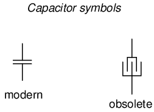
Cuando se aplica un voltaje a través de las dos placas de un capacitor, se crea un flujo de campo concentrado entre ellas, lo que permite que se desarrolle una diferencia significativa de electrones libres (una carga) entre las dos placas:
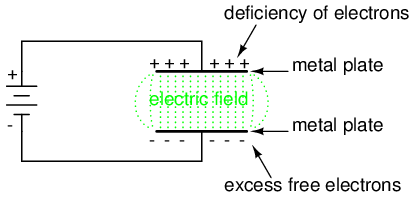
A medida que el campo eléctrico se establece mediante el voltaje aplicado, los electrones libres adicionales se ven obligados a acumularse en el conductor negativo, mientras que los electrones libres son "robados" del conductor positivo. Esta carga diferencial equivale a un almacenamiento de energía en el condensador, que representa la carga potencial de los electrones entre las dos placas. Cuanto mayor sea la diferencia de electrones en las placas opuestas de un condensador, mayor será el flujo de campo y mayor "carga" de energía almacenará el condensador.
Debido a que los capacitores almacenan la energía potencial de los electrones acumulados en forma de campo eléctrico, se comportan de manera muy diferente a las resistencias (que simplemente disipan energía en forma de calor) en un circuito. El almacenamiento de energía en un capacitor es función del voltaje entre las placas, así como de otros factores que discutiremos más adelante en este capítulo. La capacidad de un condensador para almacenar energía en función del voltaje (diferencia de potencial entre los dos cables) da como resultado una tendencia a intentar mantener el voltaje a un nivel constante. En otras palabras, los condensadores tienden a resistircambiosen caída de tensión. Cuando el voltaje a través de un capacitor aumenta o disminuye, el capacitor "resiste" lacambiarextrayendo corriente o suministrando corriente a la fuente del cambio de voltaje, en oposición a lacambiar.
Para almacenar más energía en un capacitor, se debe aumentar el voltaje a través de él. Esto significa que se deben agregar más electrones a la placa (-) y quitar más electrones a la placa (+), lo que requiere una corriente en esa dirección. Por el contrario, para liberar energía de un condensador, se debe disminuir el voltaje a través de él. Esto significa que algunos de los electrones sobrantes de la placa (-) deben regresar a la placa (+), lo que requiere una corriente en la otra dirección.
Así como la primera Ley del Movimiento de Isaac Newton ("un objeto en movimiento tiende a permanecer en movimiento; un objeto en reposo tiende a permanecer en reposo") describe la tendencia de una masa a oponerse a los cambios de velocidad, podemos establecer la tendencia de un condensador a oponerse a los cambios de voltaje como tal: "Un condensador cargado tiende a permanecer cargado; un condensador descargado tiende a permanecer descargado". Hipotéticamente, un condensador que no se toca mantendrá indefinidamente cualquier estado de carga de voltaje en el que se haya quedado. Sólo una fuente externa (o drenaje) de corriente puede alterar la carga de voltaje almacenada por un capacitor perfecto:
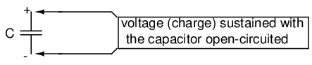
Sin embargo, en la práctica, los condensadores eventualmente perderán sus cargas de voltaje almacenadas debido a rutas de fuga internas para que los electrones fluyan de una placa a la otra. Dependiendo del tipo específico de condensador, el tiempo que tarda una carga de voltaje almacenado en autodisiparse puede ser unlargotiempo (¡varios años con el condensador en un estante!).
Cuando aumenta el voltaje a través de un capacitor, este extrae corriente del resto del circuito, actuando como una carga de energía. En esta condición se dice que el capacitor estácargando, porque hay una cantidad cada vez mayor de energía almacenada en su campo eléctrico. Tenga en cuenta la dirección de la corriente de electrones con respecto a la polaridad del voltaje:
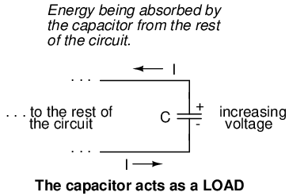
Por el contrario, cuando disminuye el voltaje en un capacitor, el capacitor suministra corriente al resto del circuito, actuando como fuente de energía. En esta condición se dice que el capacitor estádescarga. Su reserva de energía (mantenida en el campo eléctrico) está disminuyendo ahora a medida que se libera energía al resto del circuito. Tenga en cuenta la dirección de la corriente de electrones con respecto a la polaridad del voltaje:
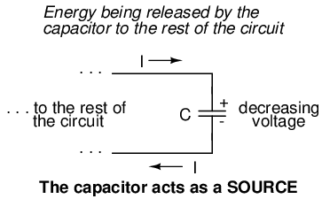
Si repentinamente se aplica una fuente de voltaje a un capacitor descargado (un aumento repentino de voltaje), el capacitor extraerá corriente de esa fuente, absorbiendo energía de ella, hasta que el voltaje del capacitor sea igual al de la fuente. Una vez que el voltaje del capacitor alcanza este estado final (cargado), su corriente decae a cero. Por el contrario, si se conecta una resistencia de carga a un condensador cargado, el condensador suministrará corriente a la carga, hasta que haya liberado toda su energía almacenada y su voltaje descienda a cero. Una vez que el voltaje del capacitor alcanza este estado final (descargado), su corriente decae a cero. En cuanto a su capacidad para cargarse y descargarse, se puede considerar que los condensadores actúan como baterías de celda secundaria.
La elección del material aislante entre las placas, como se mencionó anteriormente, tiene un gran impacto sobre cuánto flujo de campo (y por lo tanto cuánta carga) se desarrollará con cualquier cantidad dada de voltaje aplicada a través de las placas. Debido al papel de este material aislante al afectar el flujo de campo, tiene un nombre especial:dieléctrico. No todos los materiales dieléctricos son iguales: el grado en que los materiales inhiben o fomentan la formación de flujo de campo eléctrico se denominapermitividaddel dieléctrico.
La medida de la capacidad de un capacitor para almacenar energía para una determinada cantidad de caída de voltaje se llamacapacidad. No es sorprendente que la capacitancia sea también una medida de la intensidad de la oposición a los cambios de voltaje (exactamente cuánta corriente producirá para una determinada tasa de cambio de voltaje). La capacitancia se indica simbólicamente con una "C" mayúscula y se mide en la unidad Faradio, abreviada como "F".
La convención, por alguna extraña razón, ha favorecido el prefijo métrico "micro" en la medición de capacitancias grandes, y por eso muchos capacitores están clasificados en términos de valores de microFaradios confusamente grandes: por ejemplo, ¡un capacitor grande que he visto tenía una clasificación de 330,000 microFaradios! ¿Por qué no decirlo como 330 milifaradios? No sé.
Un nombre obsoleto para un condensador escondensador o condensador. Estos términos no se utilizan en ningún libro nuevo o diagrama esquemático (que yo sepa), pero pueden encontrarse en literatura electrónica más antigua. Quizás el uso más conocido del término "condensador" sea en la ingeniería automotriz, donde se utilizaba un pequeño condensador llamado con ese nombre para mitigar las chispas excesivas en los contactos del interruptor (llamados "puntos") en los sistemas de encendido electromecánicos.
- REVISAR:
- Los condensadores reaccionan contra los cambios de voltaje suministrando o extrayendo corriente en la dirección necesaria para oponerse al cambio.
- Cuando un capacitor se enfrenta a un voltaje creciente, actúa como uncarga: extrayendo corriente a medida que absorbe energía (la corriente entra por el lado negativo y sale por el lado positivo, como una resistencia).
- Cuando un capacitor se enfrenta a un voltaje decreciente, actúa como unfuente: suministra corriente a medida que libera energía almacenada (corriente que sale por el lado negativo y por el lado positivo, como una batería).
- La capacidad de un condensador para almacenar energía en forma de campo eléctrico (y en consecuencia oponerse a cambios de voltaje) se llamacapacidad. Se mide en la unidad deFaradio(F).
- Los condensadores solían ser conocidos comúnmente por otro término:condensador(alternativamente escrito "condensador").
Condensadores y cálculo diferencial
Los condensadores no tienen una "resistencia" estable como la tienen los conductores. Sin embargo, existe una relación matemática definida entre el voltaje y la corriente de un capacitor, como sigue:
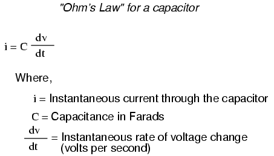
La letra minúscula "i" simboliza lacorriente instantánea, lo que significa la cantidad de corriente en un momento específico. Esto contrasta con la corriente constante o la corriente promedio (letra "I" mayúscula) durante un período de tiempo indeterminado. La expresión "dv/dt" se toma prestada del cálculo y significa la tasa instantánea de cambio de voltaje a lo largo del tiempo, o la tasa de cambio de voltaje (aumento o disminución de voltios por segundo) en un momento específico, el mismo momento específico al que se hace referencia la corriente instantánea. Por alguna razón, la cartavgeneralmente se usa para representar el voltaje instantáneo en lugar de la letrae. Sin embargo, no sería incorrecto expresar la tasa de cambio de voltaje instantáneo como "de/dt".
En esta ecuación vemos algo novedoso en nuestra experiencia hasta ahora con circuitos eléctricos: la variable detiempo. Al relacionar las cantidades de voltaje, corriente y resistencia con una resistencia, no importa si estamos tratando con mediciones tomadas durante un período de tiempo no especificado (E=IR; V=IR), o en un momento específico en el tiempo (e=ir; v=ir). La misma fórmula básica es válida, porque el tiempo es irrelevante para el voltaje, la corriente y la resistencia en un componente como una resistencia.
En un capacitor, sin embargo, el tiempo es una variable esencial, porque la corriente está relacionada con cómorápidamenteEl voltaje cambia con el tiempo. Para entender esto completamente, pueden ser necesarias algunas ilustraciones. Supongamos que conectamos un capacitor a una fuente de voltaje variable, construida con un potenciómetro y una batería:
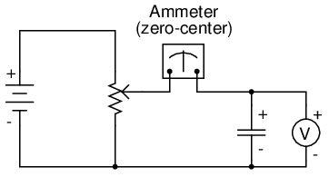
Si el mecanismo del potenciómetro permanece en una sola posición (el limpiador está estacionario), el voltímetro conectado a través del capacitor registrará un voltaje constante (sin cambios) y el amperímetro registrará 0 amperios. En este escenario, la tasa instantánea de cambio de voltaje (dv/dt) es igual a cero, porque el voltaje no cambia. La ecuación nos dice que con un cambio de 0 voltios por segundo para un dv/dt, debe haber cero corriente instantánea (i). Desde una perspectiva física, sin cambios en el voltaje, no hay necesidad de ningún movimiento de electrones para sumar o restar carga de las placas del capacitor y, por lo tanto, no habrá corriente.
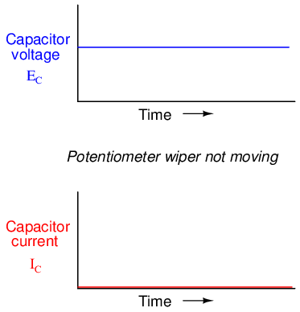
Ahora, si el limpiador del potenciómetro se mueve lenta y constantemente en la dirección "arriba", se impondrá gradualmente un voltaje mayor a través del capacitor. Así, la indicación del voltímetro irá aumentando lentamente:
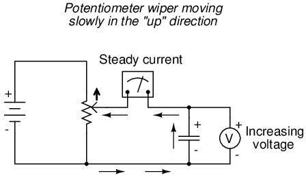
Si suponemos que el limpiador del potenciómetro se está moviendo de manera que eltasaSi el aumento de voltaje a través del capacitor es constante (por ejemplo, el voltaje aumenta a una velocidad constante de 2 voltios por segundo), el término dv/dt de la fórmula será un valor fijo. Según la ecuación, este valor fijo de dv/dt, multiplicado por la capacitancia del condensador en faradios (también fija), da como resultado una corriente fija de cierta magnitud. Desde una perspectiva física, un voltaje creciente a través del capacitor exige que haya un diferencial de carga creciente entre las placas. Por lo tanto, para una tasa de aumento de voltaje lenta y constante, debe haber una tasa lenta y constante de acumulación de carga en el capacitor, lo que equivale a una tasa de flujo lento y constante de electrones o corriente. En este escenario, el condensador actúa como uncarga, con electrones que entran en la placa negativa y salen de la positiva, acumulando energía en el campo eléctrico.
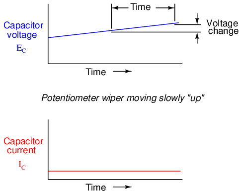
Si el potenciómetro se mueve en la misma dirección, pero a mayor velocidad, la tasa de cambio de voltaje (dv/dt) será mayor y también lo será la corriente del capacitor:
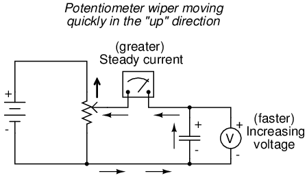
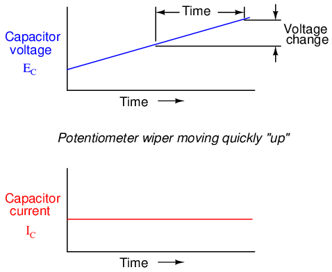
Cuando los estudiantes de matemáticas estudian cálculo por primera vez, comienzan explorando el concepto detasas de cambiopara diversas funciones matemáticas. Elderivado, que es el primer y más elemental principio de cálculo, es una expresión de la tasa de cambio de una variable en términos de otra. Los estudiantes de cálculo deben aprender este principio mientras estudian ecuaciones abstractas. Podrás aprender este principio mientras estudias algo con lo que te puedes identificar: ¡los circuitos eléctricos!
Para expresar esta relación entre voltaje y corriente en un capacitor en términos de cálculo, la corriente a través de un capacitor es laderivadodel voltaje a través del capacitor con respecto al tiempo. O, expresado en términos más simples, la corriente de un capacitor es directamente proporcional a la rapidez con la que cambia el voltaje a través de él. En este circuito donde el voltaje del capacitor se establece mediante la posición de una perilla giratoria en un potenciómetro, podemos decir que la corriente del capacitor es directamente proporcional a la rapidez con la que giramos la perilla.
Si moviéramos el limpiador del potenciómetro en la misma dirección que antes ("arriba"), pero a diferentes velocidades, obtendríamos gráficos parecidos a estos:
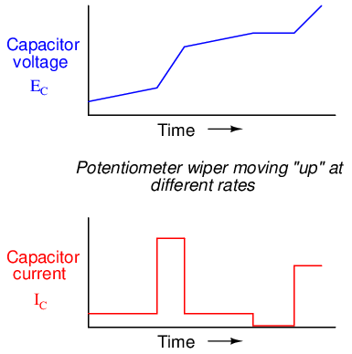
Tenga en cuenta que en cualquier momento dado, la corriente del condensador es proporcional a la tasa de cambio, opendientedel gráfico de voltaje del capacitor. Cuando la línea de voltaje aumenta rápidamente (pendiente pronunciada), la corriente también será alta. Cuando la gráfica de voltaje tiene una pendiente suave, la corriente es pequeña. En un lugar del gráfico de voltaje donde se nivela (pendiente cero, que representa un período de tiempo en el que el potenciómetro no se movía), la corriente cae a cero.
Si tuviéramos que mover el limpiador del potenciómetro en la dirección "hacia abajo", el voltaje del capacitor disminuiría.disminuiren lugar de aumentar. Nuevamente, el capacitor reaccionará a este cambio de voltaje produciendo una corriente, pero esta vez la corriente será en la dirección opuesta. Una tensión decreciente del capacitor requiere que se reduzca el diferencial de carga entre las placas del capacitor, y la única manera de que esto suceda es si los electrones invierten su dirección de flujo, el capacitor se descarga en lugar de cargarse. En esta condición, con los electrones saliendo de la placa negativa y entrando en la positiva, el capacitor actuará como unfuente, como una batería, liberando su energía almacenada al resto del circuito.
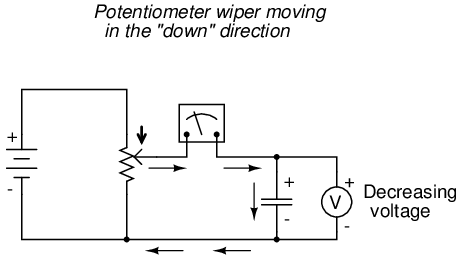
Nuevamente, la cantidad de corriente que pasa por el capacitor es directamente proporcional a la tasa de cambio de voltaje a través de él. La única diferencia entre los efectos de unadecrecientevoltaje y uncrecienteel voltaje es eldireccióndel flujo de electrones. Para la misma tasa de cambio de voltaje a lo largo del tiempo, ya sea aumentando o disminuyendo, la magnitud de la corriente (amperios) será la misma. Matemáticamente, una tasa de cambio de voltaje decreciente se expresa comonegativocantidad dv/dt. Siguiendo la fórmula i = C(dv/dt), esto dará como resultado una cifra de corriente (i) que también tiene signo negativo, lo que indica una dirección de flujo correspondiente a la descarga del condensador.
Factors affecting capacitance
Hay tres factores básicos en la construcción de capacitores que determinan la cantidad de capacitancia creada. Todos estos factores dictan la capacitancia al afectar la cantidad de flujo de campo eléctrico (diferencia relativa de electrones entre placas) que se desarrollará para una cantidad determinada de fuerza de campo eléctrico (voltaje entre las dos placas):
ÁREA DEL PLATO:Si todos los demás factores son iguales, una mayor área de placa proporciona una mayor capacitancia; menos área de placa da menos capacitancia.
Explicación:Un área de placa más grande da como resultado más flujo de campo (carga recolectada en las placas) para una fuerza de campo determinada (voltaje a través de las placas).
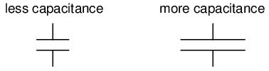
ESPACIADO DE PLACAS:Si todos los demás factores son iguales, un mayor espaciamiento entre placas produce menos capacitancia; un espaciamiento más estrecho entre placas proporciona una mayor capacitancia.
Explicación:Un espaciamiento más cercano da como resultado una mayor fuerza de campo (voltaje a través del capacitor dividido por la distancia entre las placas), lo que resulta en un mayor flujo de campo (carga recolectada en las placas) para cualquier voltaje dado aplicado a través de las placas.
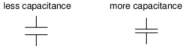
MATERIAL DIELÉCTRICO:Si todos los demás factores son iguales, una mayor permitividad del dieléctrico da una mayor capacitancia; menos permitividad del dieléctrico da menos capacitancia.
Explicación:Aunque es complicado de explicar, algunos materiales ofrecen menos oposición al flujo de campo para una cantidad determinada de fuerza de campo. Los materiales con mayor permitividad permiten un mayor flujo de campo (ofrecen menos oposición) y, por lo tanto, una mayor carga recolectada, para cualquier cantidad dada de fuerza de campo (voltaje aplicado).
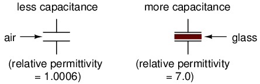
Permitividad "relativa" significa la permitividad de un material, en relación con la de un vacío puro. Cuanto mayor sea el número, mayor será la permitividad del material. El vidrio, por ejemplo, con una permitividad relativa de 7, tiene siete veces la permitividad de un vacío puro y, en consecuencia, permitirá el establecimiento de un flujo de campo eléctrico siete veces más fuerte que el del vacío, siendo iguales todos los demás factores.
La siguiente es una tabla que enumera las permitividades relativas (también conocidas como "constante dieléctrica") de varias sustancias comunes:
Tabla de permitividad relativa: a continuación
Relative permittivity
| Material | Permitividad relativa (constante dieléctrica) |
|---|---|
| Vacío | 1.0000 |
| Air | 1.0006 |
| PTFE, FEP ("teflón") | 2.0 |
| polipropileno | 2.20 to 2.28 |
| resina ABS | 2.4 to 3.2 |
| Poliestireno | 2.45 to 4.0 |
| papel encerado | 2.5 |
| Aceite de transformador | 2.5 to 4 |
| Goma dura | 2.5 to 4.80 |
| Madera (roble) | 3.3 |
| Siliconas | 3.4 to 4.3 |
| Baquelita | - 3,5 a 6,0 |
| Cuarzo, fundido | 3.8 |
| Madera (arce) | 4.4 |
| Vaso | 4.9 to 7.5 |
| Aceite de ricino | 5.0 |
| Madera (abedul) | 5.2 |
| Mica, moscovita | 5.0 to 8.7 |
| Mica aglomerada con vidrio | 6.3 to 9.3 |
| Porcelana, Esteatita | 6.5 |
| Alúmina | 8.0 to 10.0 |
| Agua destilada | 80.0 |
| Bario-estroncio-titanita | 7500 |
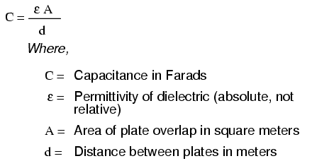
Una fórmula para capacitancia en picofaradios usando dimensiones prácticas:

Un capacitor puede tener un valor variable en lugar de fijo variando cualquiera de los factores físicos que determinan la capacitancia. Un factor relativamente fácil de variar en la construcción de un capacitor es el área de la placa, o más propiamente, la cantidad de superposición de las placas.
La siguiente fotografía muestra un ejemplo de un condensador variable que utiliza un conjunto de placas metálicas entrelazadas y un entrehierro como material dieléctrico:
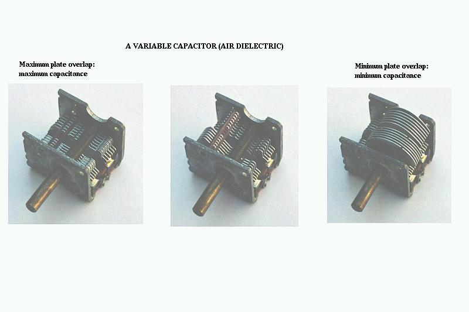
A medida que se gira el eje, el grado en que los conjuntos de placas se superponen entre sí variará, cambiando el área efectiva de las placas entre las cuales se puede establecer un campo eléctrico concentrado. Este condensador en particular tiene una capacitancia en el rango de picofaradios y se utiliza en circuitos de radio.
Condensadores en serie y en paralelo
Cuando los capacitores se conectan en serie, la capacitancia total es menor que la capacitancia individual de cualquiera de los capacitores en serie. Si se conectan dos o más condensadores en serie, el efecto general es el de un único condensador (equivalente) que tiene la suma total de las separaciones entre placas de los condensadores individuales. Como acabamos de ver, un aumento en el espaciamiento de las placas, con todos los demás factores sin cambios, da como resultado una disminución de la capacitancia.
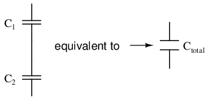
Por lo tanto, la capacitancia total es menor que la capacitancia de cualquiera de los capacitores individuales. La fórmula para calcular la capacitancia total en serie es la misma que para calcular las resistencias en paralelo:
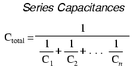
Cuando los capacitores se conectan en paralelo, la capacitancia total es la suma de las capacitancias de los capacitores individuales. Si dos o más capacitores se conectan en paralelo, el efecto general es el de un solo capacitor equivalente que tiene la suma total de las áreas de placa de los capacitores individuales. Como acabamos de ver, un aumento en el área de la placa, con todos los demás factores sin cambios, da como resultado una mayor capacitancia.
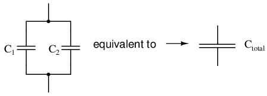
Por lo tanto, la capacitancia total es mayor que la capacitancia de cualquiera de los capacitores individuales. La fórmula para calcular la capacitancia total en paralelo es la misma que para calcular las resistencias en serie:
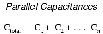
Como sin duda habrás notado, esto es exactamente lo contrario del fenómeno que presentan las resistencias. Con resistencias, las conexiones en serie dan como resultado valores aditivos, mientras que las conexiones en paralelo dan como resultado valores disminuidos. Con los condensadores, ocurre lo contrario: las conexiones en paralelo dan como resultado valores aditivos, mientras que las conexiones en serie dan como resultado valores disminuidos.
- REVISAR:
- Las capacitancias disminuyen en serie.
- Las capacitancias se suman en paralelo.
Consideraciones prácticas
Los condensadores, como todos los componentes eléctricos, tienen limitaciones que deben respetarse en aras de la confiabilidad y el funcionamiento adecuado del circuito.
voltaje de trabajo: Dado que los condensadores no son más que dos conductores separados por un aislante (el dieléctrico), debes prestar atención al voltaje máximo permitido a través de ellos. Si se aplica demasiado voltaje, se puede exceder la clasificación de "ruptura" del material dieléctrico, lo que resulta en un cortocircuito interno del capacitor.
Polaridad: Algunos condensadores están fabricados de manera que solo toleren el voltaje aplicado en una polaridad pero no en la otra. Esto se debe a su construcción: el dieléctrico es una capa microscópicamente fina de aislamiento depositada sobre una de las placas mediante una tensión continua durante la fabricación. estos se llamanelectrolíticocondensadores, y su polaridad está claramente marcada.
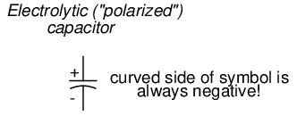
Invertir la polaridad del voltaje en un capacitor electrolítico puede resultar en la destrucción de esa capa dieléctrica súper delgada, arruinando así el dispositivo. Sin embargo, la delgadez de ese dieléctrico permite valores de capacitancia extremadamente altos en un tamaño de paquete relativamente pequeño. Por la misma razón, los condensadores electrolíticos tienden a tener un voltaje nominal bajo en comparación con otros tipos de construcción de condensadores.
Circuito equivalente:Dado que las placas de un condensador tienen cierta resistencia y que ningún dieléctrico es un aislante perfecto, no existe un condensador "perfecto". En la vida real, un condensador tiene una resistencia en serie y una resistencia en paralelo (de fuga) que interactúan con sus características puramente capacitivas:
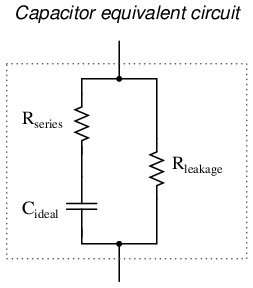
Afortunadamente, es relativamente fácil fabricar condensadores con resistencias en serie muy pequeñas y resistencias de fuga muy altas.
Tamaño físico: Para la mayoría de las aplicaciones en electrónica, el tamaño mínimo es el objetivo de la ingeniería de componentes. Cuanto más pequeños se puedan fabricar los componentes, más circuitos se podrán incorporar en un paquete más pequeño y, por lo general, también se ahorrará peso. Con los condensadores, existen dos factores limitantes principales para el tamaño mínimo de una unidad: voltaje de trabajo y capacitancia. Y estos dos factores tienden a oponerse entre sí. Para cualquier elección de materiales dieléctricos, la única forma de aumentar la tensión nominal de un condensador es aumentar el espesor del dieléctrico. Sin embargo, como hemos visto, esto tiene el efecto de disminuir la capacitancia. La capacitancia se puede recuperar aumentando el área de la placa. pero esto lo convierte en una unidad más grande. Esta es la razón por la que no se puede juzgar la clasificación de un condensador en faradios simplemente por el tamaño. Un condensador de cualquier tamaño determinado puede tener una capacitancia relativamente alta y un voltaje de trabajo bajo, viceversa, o algún compromiso entre los dos extremos. Tome las siguientes dos fotografías, por ejemplo:
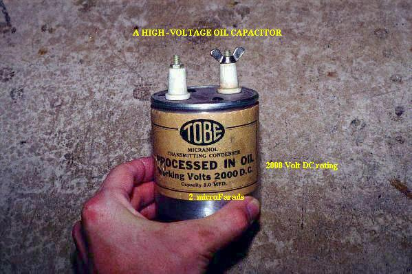
Este es un capacitor bastante grande en tamaño físico, pero tiene un valor de capacitancia bastante bajo: solo 2 µF. Sin embargo, su voltaje de funcionamiento es bastante alto: ¡2000 voltios! Si este condensador fuera rediseñado para tener una capa más delgada de dieléctrico entre sus placas, se podría lograr al menos un aumento de cien veces en la capacitancia, pero a costa de reducir significativamente su voltaje de trabajo. Compara la fotografía de arriba con la de abajo. El condensador que se muestra en la imagen inferior es una unidad electrolítica, similar en tamaño al de arriba, pero conmuydiferentes valores de capacitancia y voltaje de trabajo:
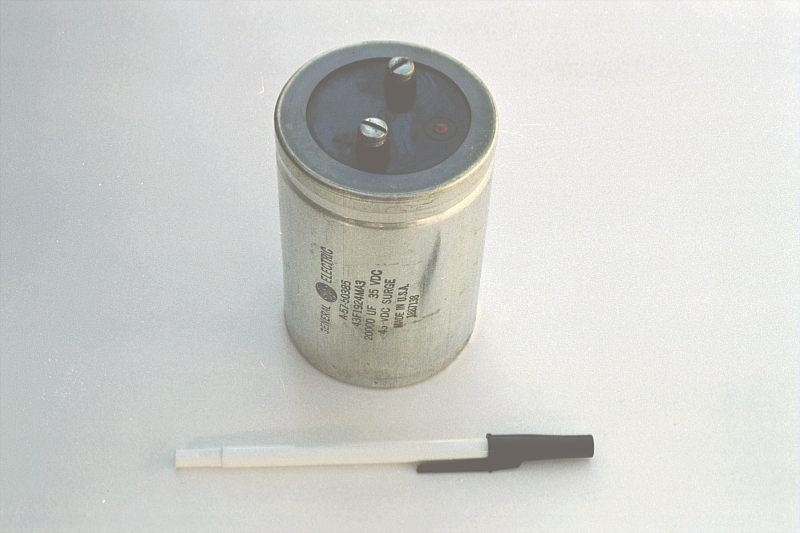
La capa dieléctrica más delgada le proporciona una capacitancia mucho mayor (20.000 µF) y un voltaje de trabajo drásticamente reducido (35 voltios continuos, 45 voltios intermitentes).
Aquí hay algunos ejemplos de diferentes tipos de capacitores, todos más pequeños que las unidades mostradas anteriormente:
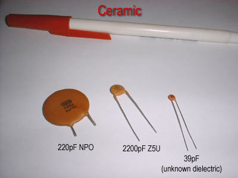
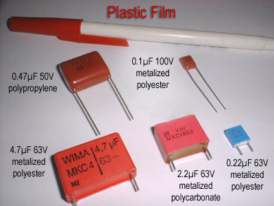
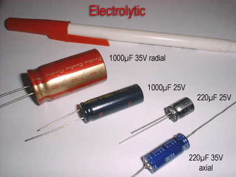
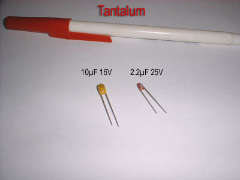
Los condensadores electrolíticos y de tantalio sonpolarizado(sensibles a la polaridad) y siempre están etiquetados como tales. Las unidades electrolíticas tienen sus cables negativos (-) distinguidos por símbolos de flecha en sus cajas. Algunos condensadores polarizados tienen su polaridad designada marcando el terminal positivo. La gran unidad electrolítica de 20.000 µF que se muestra en posición vertical tiene su terminal positivo (+) etiquetado con una marca "más". Los condensadores de cerámica, mylar, película plástica y aire no tienen marcas de polaridad, porque esos tipos sonno polarizado(no son sensibles a la polaridad).
Los condensadores son componentes muy comunes en los circuitos electrónicos. Mire de cerca la siguiente fotografía: cada componente marcado con una designación "C" en la placa de circuito impreso es un capacitor:

Algunos de los condensadores que se muestran en esta placa de circuito son electrolíticos estándar: C30(parte superior del tablero, centro) y C36(lado izquierdo, 1/3 desde arriba). Algunos otros son un tipo especial de condensador electrolítico llamadotantalio, porque este es el tipo de metal que se utiliza para fabricar las placas. Los condensadores de tantalio tienen una capacitancia relativamente alta para su tamaño físico. Los siguientes condensadores en la placa de circuito que se muestra arriba son de tantalio: C14(justo en la parte inferior izquierda de C30), C19(directamente debajo de R10, que está por debajo de C30), C24(esquina inferior izquierda del tablero) y C22(abajo a la derecha).
En esta fotografía se pueden ver ejemplos de condensadores aún más pequeños:

Los condensadores de esta placa de circuito son "dispositivos de montaje superficial", al igual que todas las resistencias, por razones de ahorro de espacio. Siguiendo la convención de etiquetado de componentes, los condensadores se pueden identificar mediante etiquetas que comienzan con la letra "C".
Colaboradores
Los contribuyentes a este capítulo se enumeran en orden cronológico de sus contribuciones, desde el más reciente hasta el primero. Consulte el Apéndice 2 (Lista de colaboradores) para fechas e información de contacto.
Warren joven(Agosto 2002): Fotografías de diferentes tipos de condensadores.
Jason Stark(Junio de 2000): Formato de documentos HTML, que dio lugar a una segunda edición mucho más atractiva.
Lecciones en circuitos eléctricoscopyright (C) 2000-2023 Tony R. Kuphaldt, según los términos y condiciones delCC BY License.